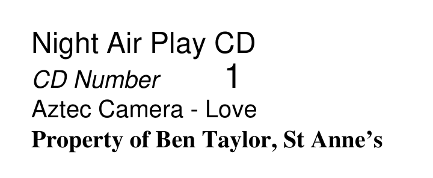
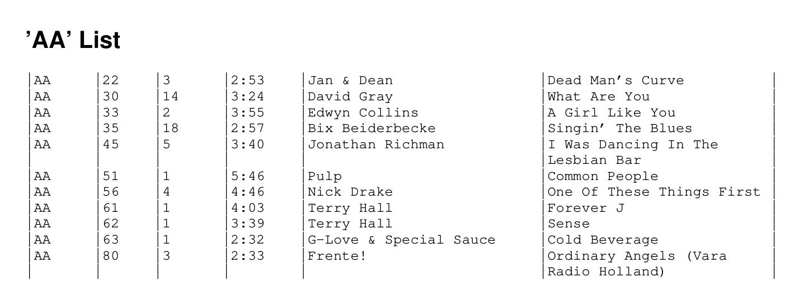

Oxygen · 31 October 1995
The NightAir playlist
197 tracks from my CDs and my brother Joe’s. Rank, disc, track, and running time, so the person in the studio could actually find the thing.
The track list
AA was my highest rank. The presenters were to tick what they’d played, with a bit more licence to repeat AA and A. Disc references and timings are the ones on the studio sheet.
CD labels and disc inventory · Download the complete playlist
197 tracks
| Rank | Artist | Track / disc title | CD | Track | Time |
|---|---|---|---|---|---|
| A | Aztec Camera | Somewhere In My HeartAztec Camera - LoveCD 1 · track 5 | 1 | 5 | 4:00 |
| B | Aztec Camera | How Men AreAztec Camera - LoveCD 1 · track 2 | 1 | 2 | 3:38 |
| C | Billy Eckstine | In The Still Of the NightCole Porter SongbookCD 2 · track 14 | 2 | 14 | 3:48 |
| B | The Wannadies | You And Me SongWannadies - Be A GirlCD 3 · track 1 | 3 | 1 | 2:49 |
| A | The Wannadies | Might Be StarsWannadies - Be A GirlCD 3 · track 2 | 3 | 2 | 3:18 |
| B | Paul Simon | Graceland (Unplugged)Unplugged Collection Vol 1CD 4 · track 6 | 4 | 6 | 5:04 |
| C | Paul McCartney | We Can Work It Out (Unplugged)Unplugged Collection Vol 1CD 4 · track 11 | 4 | 11 | 2:53 |
| D | Lucas | Lucas with the lid off (radio version)Lucas with the lid offCD 5 · track 1 | 5 | 1 | 4:00 |
| A | Marc Bolan & T-Rex | 20th Century BoyT-Rex - 20th Century BoyCD 6 · track 1 | 6 | 1 | 3:37 |
| C | The Barenaked Ladies | If I Had One Million DollarsBarenakeds - If I had $1millionCD 7 · track 1 | 7 | 1 | 4:27 |
| B | Spearhead | Hole In The Bucket (Single Mix)Spearhead - Hole in the BucketCD 8 · track 1 | 8 | 1 | 4:12 |
| B | Billy Bragg | You Woke Up My NeighbourhoodBilly Bragg - You Woke Up...CD 9 · track 1 | 9 | 1 | 3:10 |
| B | Nat King Cole | Just One of Those ThingsStardust Jazz Piano GreatsCD 10 · track 4 | 10 | 4 | 3:16 |
| C | REM | Everybody HurtsREM - Automatic for the PeopleCD 11 · track 4 | 11 | 4 | 5:17 |
| B | REM | The Sidewinder Sleeps ToniteREM - Automatic for the PeopleCD 11 · track 3 | 11 | 3 | 4:06 |
| A | Frank Sinatra | Strangers In The NightSinatra - Strangers in the NightCD 12 · track 1 | 12 | 1 | 2:25 |
| C | Frank Sinatra | Blue MoonSinatra - Strangers in the NightCD 12 · track 6 | 12 | 6 | 2:50 |
| A | The Frank & Walters | This Is Not A SongFrank + Walters - This Is Not A SongCD 13 · track 1 | 13 | 1 | 3:30 |
| C | Elvis Costello and the Attractions | 20% AmnesiaElvis Costello - Brutal YouthCD 14 · track 8 | 14 | 8 | 3:26 |
| B | Prefab Sprout | TiffanysPrefab Sprout - Protest SongsCD 15 · track 6 | 15 | 6 | 3:45 |
| C | The Monkees | ThemeThe MonkeesCD 16 · track 1 | 16 | 1 | 2:20 |
| A | The Monkees | Last Train to ClarksvilleThe MonkeesCD 16 · track 7 | 16 | 7 | 2:40 |
| D | The Monkees | I Wanna Be FreeThe MonkeesCD 16 · track 3 | 16 | 3 | 2:24 |
| A | Lord Tanamo | I'm In The Mood For SkaRoots of Reggae 3CD 17 · track 16 | 17 | 16 | 2:25 |
| B | Bob Marley & The Wailers | CautionRoots of Reggae 3CD 17 · track 1 | 17 | 1 | 2:43 |
| D | Del Amitri | To Last A LifetimeDel Amitri - Change EverythingCD 18 · track 9 | 18 | 9 | 4:03 |
| B | Johnny Cash | I Walk The Line (Live San Quentin)Johnny Cash Live at San QuentinCD 19 · track 3 | 19 | 3 | 2:54 |
| C | Johnny Cash | A Boy Named Sue (Live San Quentin)Johnny Cash Live at San QuentinCD 19 · track 8 | 19 | 8 | 3:36 |
| C | Widespread Panic | Send Your MindWidespread PanicCD 20 · track 1 | 20 | 1 | 3:00 |
| A | A House | Take It Easy On MeA House - Take It Easy On MeCD 21 · track 1 | 21 | 1 | 3:30 |
| C | A House | Everything's WrongA House - Take It Easy On MeCD 21 · track 3 | 21 | 3 | 3:11 |
| AA | Jan & Dean | Dead Man's CurveJan and Dean - Gold CollectionCD 22 · track 3 | 22 | 3 | 2:53 |
| B | Elvis Costello | Sulky Girl (single version)Elvis Costello - Sulky GirlCD 23 · track 1 | 23 | 1 | 3:16 |
| A | The The | I Saw The LightThe The - I Saw The LightCD 24 · track 1 | 24 | 1 | 2:38 |
| A | Toad The Wet Sprocket | All I WantToad the Wet Sprocket - All I WantCD 25 · track 1 | 25 | 1 | 3:!5 |
| B | Erma Franklin | (Take A Little) Piece of My HeartErma Franklin - Piece of my HeartCD 26 · track 1 | 26 | 1 | 2:34 |
| C | Erma Franklin | Ev'ry Time We Say GoodbyeErma Franklin - Piece of my HeartCD 26 · track 2 | 26 | 2 | 2:45 |
| A | The Velvet Underground | Pale Blue EyesThe Velvet UndergroundCD 27 · track 4 | 27 | 4 | 5:33 |
| A | The Velvet Underground | Beginning To See The LightThe Velvet UndergroundCD 27 · track 6 | 27 | 6 | 4:27 |
| B | Freakpower | Turn On, Tune In, Cop OutVox CD Free '94CD 28 · track 10 | 28 | 10 | 4:13 |
| C | Deacon Blue | Will We Be LoversDeacon Blue - Whatever you Say...CD 29 · track 7 | 29 | 7 | 3:50 |
| AA | David Gray | What Are YouVirgin Promo - Signed Sealed DeliveredCD 30 · track 14 | 30 | 14 | 3:24 |
| D | S*M*A*S*H | Real SurrealVirgin Promo - Signed Sealed DeliveredCD 30 · track 3 | 30 | 3 | 3:35 |
| A | The Fall | Hey! StudentThe Fall - 15 WaysCD 31 · track 2 | 31 | 2 | 4:27 |
| B | The Fall | 15 WaysThe Fall - 15 WaysCD 31 · track 1 | 31 | 1 | 2:52 |
| B | G-Love and Special Sauce | Blues MusicG Love and Special Sauce - Blues MusicCD 32 · track 1 | 32 | 1 | 4:15 |
| AA | Edwyn Collins | A Girl Like YouEdwyn Collins - Gorgeous GeorgeCD 33 · track 2 | 33 | 2 | 3:55 |
| D | Edwyn Collins | The Campaign for Real RockEdwyn Collins - Gorgeous GeorgeCD 33 · track 1 | 33 | 1 | 6:30 |
| C | Edwyn Collins | Gorgeous GeorgeEdwyn Collins - Gorgeous GeorgeCD 33 · track 7 | 33 | 7 | 4:05 |
| B | Dave Brubeck | Take FiveJazz Be Bop to ElectricCD 34(1) · track 7 | 34(1) | 7 | 4:45 |
| C | Bill Evans | Autumn LeavesJazz Be Bop to ElectricCD 34(2) · track 2 | 34(2) | 2 | 4:42 |
| AA | Bix Beiderbecke | Singin' The Blues18 Gems of the Giants of JazzCD 35 · track 18 | 35 | 18 | 2:57 |
| B | Thelonious Monk | 'Round Midnight18 Gems of the Giants of JazzCD 35 · track 11 | 35 | 11 | 3:10 |
| D | Errol Garner | Misty18 Gems of the Giants of JazzCD 35 · track 13 | 35 | 13 | 2:47 |
| D | Quincy Jones Orchestra | Moanin'18 Gems of the Giants of JazzCD 35 · track 8 | 35 | 8 | 3:03 |
| B | Miles Davis | Miles18 Gems of the Giants of JazzCD 35 · track 1 | 35 | 1 | 5:43 |
| A | Everything But The Girl | I Don't Want To Talk About It (live)Everything But The Girl - MissingCD 36 · track 3 | 36 | 3 | 3:20 |
| B | Everything But The Girl | Missing (Album Version)Everything But The Girl - MissingCD 36 · track 1 | 36 | 1 | 4:04 |
| C | Everything But The Girl | These Days (Live)Everything But The Girl - MissingCD 36 · track 4 | 36 | 4 | 3:23 |
| B | The Verve | History (Radio Edit)The Verve - HistoryCD 37 · track 1 | 37 | 1 | 3:59 |
| B | Bob Dylan | Subterranean Homesick BluesBob Dylan - Bringing It All Back HomeCD 38 · track 1 | 38 | 1 | 2:21 |
| D | Bob Dylan | Mr Tambourine ManBob Dylan - Bringing It All Back HomeCD 38 · track 8 | 38 | 8 | 5:27 |
| B | Bob Dylan | It's All Over Now, Baby BlueBob Dylan - Bringing It All Back HomeCD 38 · track 11 | 38 | 11 | 4:07 |
| C | Bob Dylan | Love Minus ZeroBob Dylan - Bringing It All Back HomeCD 38 · track 4 | 38 | 4 | 2:47 |
| B | American Music Club | Johnny Mathis' FeetAmerican Music Club - Johnny Mathis' FeetCD 39(1) · track 1 | 39(1) | 1 | 3:38 |
| A | Aztec Camera | Sister AnnAztec Camera - DreamlandCD 40 · track 8 | 40 | 8 | 5:13 |
| D | Aztec Camera | Dream Sweet DreamsAztec Camera - DreamlandCD 40 · track 6 | 40 | 6 | 3:26 |
| B | Aztec Camera | Let Your Love DecideAztec Camera - DreamlandCD 40 · track 4 | 40 | 4 | 5:03 |
| C | Aztec Camera | Black LuciaAztec Camera - DreamlandCD 40 · track 3 | 40 | 3 | 3:59 |
| B | Rolling Stones | Like A Rolling StoneRolling Stones - Like a RollingCD 41 · track 1 | 41 | 1 | 4:18 |
| C | Count Basie Orchestra | Lover ManSupreme SaxophoneCD 42 · track 7 | 42 | 7 | 6:59 |
| B | Gerry Mulligan | Four And One MooreSupreme SaxophoneCD 42 · track 1 | 42 | 1 | 4:23 |
| B | Everything But The Girl vs Todd Terry | Missing (Blanco/Eternal Radio Edit)ebtg vs Todd Terry- MissingCD 43 · track 1 | 43 | 1 | 3:53 |
| A | The La's | There She GoesThe La'sCD 44 · track 5 | 44 | 5 | 2:40 |
| B | The La's | Son Of A GunThe La'sCD 44 · track 1 | 44 | 1 | 1:51 |
| AA | Jonathan Richman | I Was Dancing In The Lesbian BarI, JonathanCD 45 · track 5 | 45 | 5 | 3:40 |
| B | Jonathan Richman | A Higher PowerI, JonathanCD 45 · track 9 | 45 | 9 | 3:02 |
| C | Jonathan Richman | You Can't Talk To The DudeI, JonathanCD 45 · track 3 | 45 | 3 | 2:49 |
| B | Jonathan Richman | Parties In The USAI, JonathanCD 45 · track 3 | 45 | 3 | 4:42 |
| A | Emmylou Harris | Wrecking BallEmmylou Harris - Wrecking BallCD 46 · track 4 | 46 | 4 | 4:49 |
| A | The Smiths | How Soon Is Now?The Smiths - Meat is MurderCD 47 · track 6 | 47 | 6 | 6:43 |
| C | The Smiths | Nowhere FastThe Smiths - Meat is MurderCD 47 · track 7 | 47 | 7 | 2:36 |
| A | Stanton-Miranda | Love Will Tear Us ApartAND - Joy Division CoversCD 48 · track 2 | 48 | 2 | 3:52 |
| D | Girls Against Boys | She's Lost ControlAND - Joy Division CoversCD 48 · track 1 | 48 | 1 | 3:26 |
| B | Ash | Angel InterceptorAsh - Angel InterceptorCD 49 · track 1 | 49 | 1 | 4:03 |
| A | Radiohead | Lucky (War Child)HelpCD 50 · track 4 | 50 | 4 | 4:15 |
| C | Suede | ShipbuildingHelpCD 50 · track 8 | 50 | 8 | 3:12 |
| D | Manic Street Preachers | Raindrops Keep Falling On My HeadHelpCD 50 · track 13 | 50 | 13 | 2:48 |
| B | KLF | The Magnificent SevenHelpCD 50 · track 15 | 50 | 15 | 2:12 |
| A | Terry Hall & Marijne Van Der Vlugt | Dream A LIttle Dream Of MeHelpCD 50 · track 17 | 50 | 17 | 3:22 |
| AA | Pulp | Common PeoplePulp - Common PeopleCD 51 · track 1 | 51 | 1 | 5:46 |
| A | Pulp | UnderwearPulp - Common PeopleCD 51 · track 2 | 51 | 2 | 4:03 |
| A | Orange | Judy Over The RainbowOrange - Judy Over The RainbowCD 52 · track 1 | 52 | 1 | 3:13 |
| B | Aztec Camera | SunAztec Camera - SunCD 53 · track 1 | 53 | 1 | 4:28 |
| B | Rampage | The MonkeesRampage - The MonkeesCD 54 · track 1 | 54 | 1 | 2:37 |
| A | Cypress Hill | Hits From The BongVoxy Music - Free CDCD 55 · track 4 | 55 | 4 | 2:40 |
| AA | Nick Drake | One Of These Things FirstNick Drake - Bryter LaterCD 56 · track 4 | 56 | 4 | 4:46 |
| C | Nick Drake | Northern SkyNick Drake - Bryter LaterCD 56 · track 9 | 56 | 9 | 3:42 |
| B | Nick Drake | Bryter LayterNick Drake - Bryter LaterCD 56 · track 6 | 56 | 6 | 3:16 |
| A | Oasis | WonderwallTerry Hall - RainbowCD 57 · track 1 | 57 | 1 | 4:18 |
| A | Oasis | The MasterplanTerry Hall - RainbowCD 57 · track 4 | 57 | 4 | 5:12 |
| D | Oasis | Round Are WayTerry Hall - RainbowCD 57 · track 2 | 57 | 2 | 5:39 |
| B | The Lightning Seeds | Lucky YouLightning Seeds - Lucky YouCD 58 · track 1 | 58 | 1 | 3:54 |
| C | The Lightning Seeds | The Likely LadsLightning Seeds - Lucky YouCD 58 · track 3 | 58 | 3 | 3:39 |
| A | Stevie Wonder | Higher GroundStevie Wonder - InnervisionsCD 59 · track 5 | 59 | 5 | 3:43 |
| C | Stevie Wonder | Too HighStevie Wonder - InnervisionsCD 59 · track 1 | 59 | 1 | 4:37 |
| B | The Smiths | Reel Around The FountainThe SmithsCD 60 · track 1 | 60 | 1 | 5:56 |
| C | The Smiths | Still IllThe SmithsCD 60 · track 7 | 60 | 7 | 3:20 |
| B | The Smiths | This Charming ManThe SmithsCD 60 · track 6 | 60 | 6 | 2:42 |
| AA | Terry Hall | Forever JTerry Hall - Forever JCD 61 · track 1 | 61 | 1 | 4:03 |
| AA | Terry Hall | SenseTerry Hall - SenseCD 62 · track 1 | 62 | 1 | 3:39 |
| B | Terry Hall | This Guy's In Love With YouTerry Hall - SenseCD 62 · track 3 | 62 | 3 | 2:27 |
| AA | G-Love & Special Sauce | Cold BeverageG-Love & Special Sauce - Cold BeveragesCD 63 · track 1 | 63 | 1 | 2:32 |
| B | The Pet Shop Boys | Being BoringPet Shop Boys - BehaviourCD 64 · track 1 | 64 | 1 | 6:45 |
| C | The Pet Shop Boys | This must be the place I waited years to leavePet Shop Boys - BehaviourCD 64 · track 2 | 64 | 2 | 5:25 |
| C | The Pet Shop Boys | JealousyPet Shop Boys - BehaviourCD 64 · track 10 | 64 | 10 | 4:45 |
| A | Elvis Costello & The Attractions | Almost BlueCostello + Attractions - Imperial BedroomCD 65 · track 6 | 65 | 6 | 2:47 |
| C | Elvis Costello & The Attractions | The Long HoneymoonCostello + Attractions - Imperial BedroomCD 65 · track 4 | 65 | 4 | 4:15 |
| B | Elvis Costello & The Attractions | Shabby DollCostello + Attractions - Imperial BedroomCD 65 · track 3 | 65 | 3 | 4:42 |
| B | David Bowie | Ziggy StardustDavid Bowie - Santa Monica '72CD 66 · track 3 | 66 | 3 | 3:24 |
| B | David Bowie | Space OddityDavid Bowie - Santa Monica '72CD 66 · track 8 | 66 | 8 | 5:22 |
| B | Aztec Camera | The Crying SceneAztec Camera - The Crying SceneCD 67 · track 1 | 67 | 1 | 3:40 |
| D | Aztec Camera | True ColoursAztec Camera - The Crying SceneCD 67 · track 2 | 67 | 2 | 4:30 |
| A | Aztec Camera | I Threw It All AwayAztec Camera - The Crying SceneCD 67 · track 4 | 67 | 4 | 2:04 |
| A | Gram Parsons | Return of the Grievous AngelGram Parsons - GP/Grievous AngelCD 68 · track 12 | 68 | 12 | 4:17 |
| B | Gram Parsons | Cry One More TimeGram Parsons - GP/Grievous AngelCD 68 · track 9 | 68 | 9 | 3:30 |
| C | Gram Parsons | In My Hour Of DarknessGram Parsons - GP/Grievous AngelCD 68 · track 20 | 68 | 20 | 3:42 |
| C | The Disposable Heroes of Hiphoprisy | Famous And Dandy (Like Amons 'n' Andy) (Radio)Disposables - Famous and DandyCD 69 · track 1 | 69 | 1 | 4:05 |
| A | The Disposable Heroes of Hiphoprisy | PositiveDisposables - Famous and DandyCD 69 · track 3 | 69 | 3 | 4:20 |
| C | The Disposable Heroes of Hiphoprisy | Language of Violence (Jazz Version)Disposables - Famous and DandyCD 69 · track 4 | 69 | 4 | 4:42 |
| B | Aztec Camera | Spanish HorsesAztec Camera - Spanish HorsesCD 70 · track 1 | 70 | 1 | 4:19 |
| D | Aztec Camera | Birth of the True (Live at Ronnie Scott's)Aztec Camera - Spanish HorsesCD 70 · track 2 | 70 | 2 | 3:59 |
| A | The Beach Boys | Hang On To Your EgoThe Beach Boys - Pet SoundsCD 71 · track 15 | 71 | 15 | 3:12 |
| B | The Beach Boys | God Only KnowsThe Beach Boys - Pet SoundsCD 71 · track 8 | 71 | 8 | 2:47 |
| C | The Beach Boys | Don't Talk (Put Your Head On My Shoulder)The Beach Boys - Pet SoundsCD 71 · track 4 | 71 | 4 | 2:47 |
| D | Aztec Camera | The Bugle Sounds Again (Live at Ronnie Scott's)Aztec Camera - Spanish Horses (Live)CD 72 · track 3 | 72 | 3 | 3:40 |
| B | Aztec Camera | Dolphins (Live at Ronnie Scott's)Aztec Camera - Spanish Horses (Live)CD 72 · track 4 | 72 | 4 | 4:40 |
| B | Prefab Sprout | Lions In My Own Garden (Exit Someone)Prefab Sprout - If You Don't Love MeCD 73(2) · track 3 | 73(2) | 3 | 2:34 |
| C | Prefab Sprout | If You Don't Love MePrefab Sprout - If You Don't Love MeCD 73(1) · track 1 | 73(1) | 1 | 3:43 |
| B | Billy Bragg | Accident Waiting to Happen (Red Star Version)Billy Bragg - Accident Waiting to HappenCD 74 · track 1 | 74 | 1 | 3:47 |
| C | Billy Bragg | SulkBilly Bragg - Accident Waiting to HappenCD 74 · track 2 | 74 | 2 | 3:46 |
| B | Billy Bragg | RevolutionBilly Bragg - Accident Waiting to HappenCD 74 · track 4 | 74 | 4 | 1:47 |
| C | Toad The Wet Sprocket | Fall DownToad The Wet Sprocket - Fall DownCD 75 · track 1 | 75 | 1 | 3:25 |
| B | Paul Weller | Above the CloudsPaul Weller - Above The CloudsCD 76 · track 1 | 76 | 1 | 3:50 |
| C | Paul Weller | Everything Has a Price to PayPaul Weller - Above The CloudsCD 76 · track 3 | 76 | 3 | 4:08 |
| B | Paul Weller | Feeling AlrightPaul Weller - Above The CloudsCD 76 · track 4 | 76 | 4 | 4:00 |
| B | Manic Street Preachers | Roses in the HospitalManic Street Preachers - Roses....CD 77 · track 1 | 77 | 1 | 4:10 |
| B | Del Amitri | Be My DownfallDel Amitri - Be My DownfallCD 78 · track 1 | 78 | 1 | 3:28 |
| A | Deacon Blue | Wages Day (piano version)Deacon Blue - I Was Right...CD 79 · track 4 | 79 | 4 | 3:12 |
| A | Frente! | Accidentally Kelly StreetFrente! - Accidentally Kelly StreetCD 80 · track 1 | 80 | 1 | 3:18 |
| AA | Frente! | Ordinary Angels (Vara Radio Holland)Frente! - Accidentally Kelly StreetCD 80 · track 3 | 80 | 3 | 2:33 |
| A | The Fall | Totally WiredThe Fall - The CollectionCD 81 · track 13 | 81 | 13 | 3:24 |
| A | The Fall | A Day In The LifeThe Fall - The CollectionCD 81 · track 19 | 81 | 19 | 4:22 |
| C | The Smiths | AskThe Smiths - AskCD 82 · track 1 | 82 | 1 | 3:14 |
| B | The Smiths | Cemetry GatesThe Smiths - AskCD 82 · track 2 | 82 | 2 | 2:40 |
| C | The Pet Shop Boys | West End GirlsThe Pet Shop Boys - PleaseCD 83 · track 2 | 83 | 2 | 4:45 |
| B | The Pet Shop Boys | SuburbiaThe Pet Shop Boys - PleaseCD 83 · track 5 | 83 | 5 | 5:05 |
| C | Teenage Fanclub | The ConceptTeenage Fanclub - The ConceptCD 84 · track 1 | 84 | 1 | 3:20 |
| B | Deacon Blue | He Looks Like Spencer Tracy NowDeacon Blue - RaintownCD 85 · track 4 | 85 | 4 | 3:47 |
| C | Deacon Blue | LoadedDeacon Blue - RaintownCD 85 · track 5 | 85 | 5 | 4:27 |
| B | Deacon Blue | When Will You (Make My Telephone Ring)Deacon Blue - RaintownCD 85 · track 6 | 85 | 6 | 4:57 |
| A | Deacon Blue | Chocolate GirlDeacon Blue - RaintownCD 85 · track 7 | 85 | 7 | 3:15 |
| A | Deacon Blue | DignityDeacon Blue - RaintownCD 85 · track 8 | 85 | 8 | 3:53 |
| B | Guru featuring MC Solaar | Le Bien, Le MalVox Free CD - Chrysalis SpecialCD 86 · track 11 | 86 | 11 | 3:20 |
| C | Blondie | Sunday Girl (French Version)Vox Free CD - Chrysalis SpecialCD 86 · track 2 | 86 | 2 | 3:00 |
| C | Sinead O'Connor | Nothing Compares 2 U (Live Video Version)Vox Free CD - Chrysalis SpecialCD 86 · track 15 | 86 | 15 | 5:26 |
| D | The Waterboys | The Big MusicVox Free CD - Chrysalis SpecialCD 86 · track 1 | 86 | 1 | 4:40 |
| D | The High Llamas | Checkin In, Checking Out (Radio Edit)The High Llamas - Checking In Checking OutCD 87 · track 1 | 87 | 1 | 3:46 |
| B | The Clash | Train In VainThe Clash - Train In VainCD 88 · track 1 | 88 | 1 | 3:08 |
| B | The Clash | The Right ProfileThe Clash - Train In VainCD 88 · track 2 | 88 | 2 | 3:52 |
| B | Marvin Gaye | Let's Get It OnMarvin Gaye - Let's Get It OnCD 89 · track 1 | 89 | 1 | 4:51 |
| C | Marvin Gaye | Just To Keep You SatisfiedMarvin Gaye - Let's Get It OnCD 89 · track 8 | 89 | 8 | 4:27 |
| B | Menswea@r | DaydreamerMeanswe@r - NuisanceCD 90 · track 5 | 90 | 5 | 2:02 |
| D | Menswea@r | Little Miss Pinpoint EyesMeanswe@r - NuisanceCD 90 · track 4 | 90 | 4 | 2:14 |
| C | Neil Young with Crazy Horse | Cinnamon GirlNeil Young - Everbody Knows...CD 91 · track 1 | 91 | 1 | 2:58 |
| B | Neil Young with Crazy Horse | Everybody Knows This Is NowhereNeil Young - Everbody Knows...CD 91 · track 2 | 91 | 2 | 2:26 |
| B | Aimee Mann | 4th Of JulyQ DCC CD 2CD 92 · track 5 | 92 | 5 | 3:20 |
| C | Coldcut | Pearls Before SwineQ DCC CD 2CD 92 · track 13 | 92 | 13 | 4:55 |
| B | Don McLean | American PieQ DCC CD 2CD 92 · track 15 | 92 | 15 | 8:15 |
| B | Big Audio | Looking For A SongBig Audio - Looking For A SongCD 93 · track 1 | 93 | 1 | 5:31 |
| B | Martin Stephenson and the Daintees | Left Us To BurnMartin Stephenson - Let Us To BurnCD 94 · track 1 | 94 | 1 | 3:26 |
| A | Martin Stephenson and the Daintees | Big North LightsMartin Stephenson - Let Us To BurnCD 94 · track 2 | 94 | 2 | 2:51 |
| B | Soul Asylum | Runaway TrainSoul Asylum - Runaway TrainCD 95 · track 1 | 95 | 1 | 4:26 |
| A | The Jayhawks | Nevada, CaliforniaQ DCC CDCD 96 · track 2 | 96 | 2 | 4:00 |
| B | Crowded House | Waether With You (Live)Sweet SixteenCD 97 · track 9 | 97 | 9 | 5:17 |
| C | Radiohead | Thinking About YouSweet SixteenCD 97 · track 10 | 97 | 10 | 2:32 |
| C | Television | Call Mr LeeSweet SixteenCD 97 · track 15 | 97 | 15 | 4:06 |
| C | Morrissey | You're The Onme For Me, FattyMorrisey - Your ArsenalCD 98 · track 7 | 98 | 7 | 2:58 |
| C | Morrissey | Seasick, Yet Still DockedMorrisey - Your ArsenalCD 98 · track 8 | 98 | 8 | 5:07 |
| B | Morriseey | I Know It's Gonna Happen SomedayMorrisey - Your ArsenalCD 98 · track 9 | 98 | 9 | 4:20 |
| A | John Lee Hooker | Boom BoomNo surviving disc labelCD 99 · track 1 | 99 | 1 | 2:28 |
| C | John Lee Hooker | Ground Hog BluesNo surviving disc labelCD 99 · track 9 | 99 | 9 | 2:08 |
| A | John Lee Hooker | This Is HipNo surviving disc labelCD 99 · track 16 | 99 | 16 | 3:44 |
| B | John Lee Hooker | Crawlin' KingsnakeNo surviving disc labelCD 99 · track 2 | 99 | 2 | 2:42 |
| C | Terry Hall | Chasing A RainbowTerry Hall - RainbowsCD 100 · track 1 | 100 | 1 | 3:06 |
| C | Terry Hall | See No Evil (Live)Terry Hall - RainbowsCD 100 · track 3 | 100 | 3 | 4:03 |
| B | Terry Hall and Tricky | Ghost Town (LiveTerry Hall - RainbowsCD 100 · track 4 | 100 | 4 | 3:59 |
Download the playlist as CSV · Original plain-text list · Playlist and disc data
‘My brother, who is bigger than me’


‘Treat the CDs with respect. They belong to me, and my brother, who is bigger than me.’ (It is unclear to me who is bigger than whom. Joe is taller than I, but also skinnier.) There are tracks for all 100 numbered CDs and printed titles for 99 of them. Both tracks at number 99 are John Lee Hooker.
Read the disc inventory
- 01 Aztec Camera - Love
- 02 Cole Porter Songbook
- 03 Wannadies - Be A Girl
- 04 Unplugged Collection Vol 1
- 05 Lucas with the lid off
- 06 T-Rex - 20th Century Boy
- 07 Barenakeds - If I had $1million
- 08 Spearhead - Hole in the Bucket
- 09 Billy Bragg - You Woke Up...
- 10 Stardust Jazz Piano Greats
- 11 REM - Automatic for the People
- 12 Sinatra - Strangers in the Night
- 13 Frank + Walters - This Is Not A Song
- 14 Elvis Costello - Brutal Youth
- 15 Prefab Sprout - Protest Songs
- 16 The Monkees
- 17 Roots of Reggae 3
- 18 Del Amitri - Change Everything
- 19 Johnny Cash Live at San Quentin
- 20 Widespread Panic
- 21 A House - Take It Easy On Me
- 22 Jan and Dean - Gold Collection
- 23 Elvis Costello - Sulky Girl
- 24 The The - I Saw The Light
- 25 Toad the Wet Sprocket - All I Want
- 26 Erma Franklin - Piece of my Heart
- 27 The Velvet Underground
- 28 Vox CD Free '94
- 29 Deacon Blue - Whatever you Say...
- 30 Virgin Promo - Signed Sealed Delivered
- 31 The Fall - 15 Ways
- 32 G Love and Special Sauce - Blues Music
- 33 Edwyn Collins - Gorgeous George
- 34 Jazz Be Bop to Electric
- 35 18 Gems of the Giants of Jazz
- 36 Everything But The Girl - Missing
- 37 The Verve - History
- 38 Bob Dylan - Bringing It All Back Home
- 39 American Music Club - Johnny Mathis' Feet
- 40 Aztec Camera - Dreamland
- 41 Rolling Stones - Like a Rolling
- 42 Supreme Saxophone
- 43 ebtg vs Todd Terry- Missing
- 44 The La's
- 45 I, Jonathan
- 46 Emmylou Harris - Wrecking Ball
- 47 The Smiths - Meat is Murder
- 48 AND - Joy Division Covers
- 49 Ash - Angel Interceptor
- 50 Help
- 51 Pulp - Common People
- 52 Orange - Judy Over The Rainbow
- 53 Aztec Camera - Sun
- 54 Rampage - The Monkees
- 55 Voxy Music - Free CD
- 56 Nick Drake - Bryter Later
- 57 Terry Hall - Rainbow
- 58 Lightning Seeds - Lucky You
- 59 Stevie Wonder - Innervisions
- 60 The Smiths
- 61 Terry Hall - Forever J
- 62 Terry Hall - Sense
- 63 G-Love & Special Sauce - Cold Beverages
- 64 Pet Shop Boys - Behaviour
- 65 Costello + Attractions - Imperial Bedroom
- 66 David Bowie - Santa Monica '72
- 67 Aztec Camera - The Crying Scene
- 68 Gram Parsons - GP/Grievous Angel
- 69 Disposables - Famous and Dandy
- 70 Aztec Camera - Spanish Horses
- 71 The Beach Boys - Pet Sounds
- 72 Aztec Camera - Spanish Horses (Live)
- 73 Prefab Sprout - If You Don't Love Me
- 74 Billy Bragg - Accident Waiting to Happen
- 75 Toad The Wet Sprocket - Fall Down
- 76 Paul Weller - Above The Clouds
- 77 Manic Street Preachers - Roses....
- 78 Del Amitri - Be My Downfall
- 79 Deacon Blue - I Was Right...
- 80 Frente! - Accidentally Kelly Street
- 81 The Fall - The Collection
- 82 The Smiths - Ask
- 83 The Pet Shop Boys - Please
- 84 Teenage Fanclub - The Concept
- 85 Deacon Blue - Raintown
- 86 Vox Free CD - Chrysalis Special
- 87 The High Llamas - Checking In Checking Out
- 88 The Clash - Train In Vain
- 89 Marvin Gaye - Let's Get It On
- 90 Meanswe@r - Nuisance
- 91 Neil Young - Everbody Knows...
- 92 Q DCC CD 2
- 93 Big Audio - Looking For A Song
- 94 Martin Stephenson - Let Us To Burn
- 95 Soul Asylum - Runaway Train
- 96 Q DCC CD
- 97 Sweet Sixteen
- 98 Morrisey - Your Arsenal
- 99 Label missing, tracks credited to John Lee Hooker
- 100 Terry Hall - Rainbows

